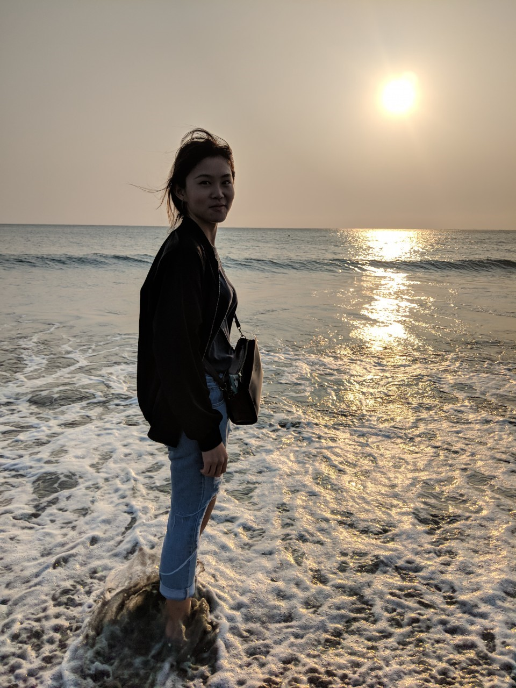
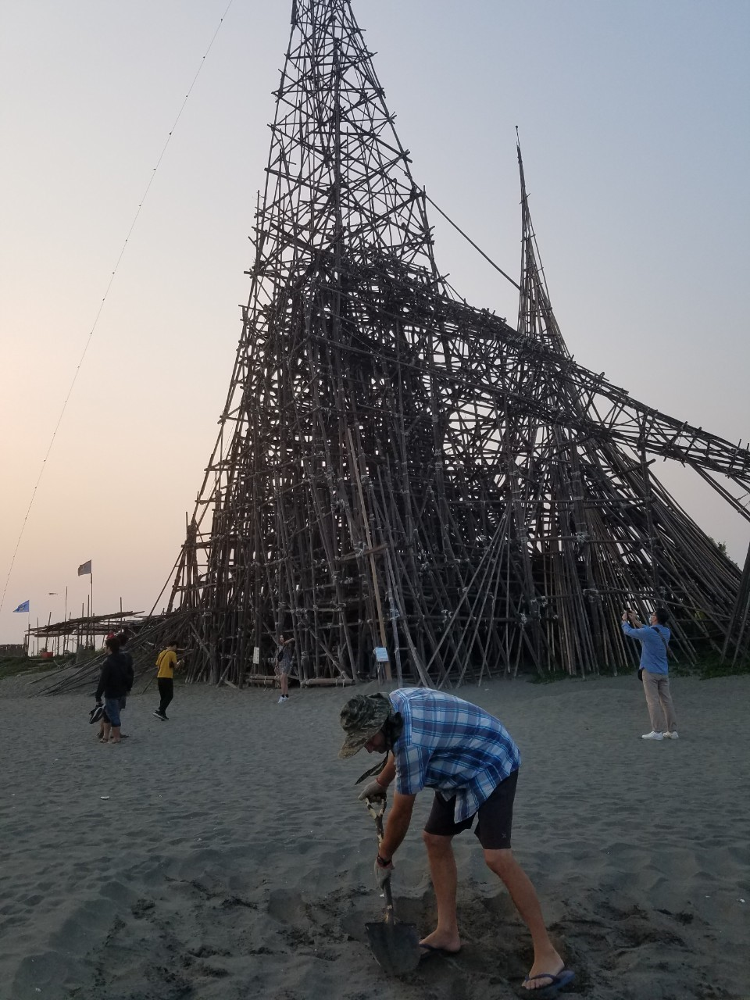

熟悉的溫度與味道
住好一點
吃多一點
睡飽一點
我們的軌跡打造整個台南
2019-04-03 @台南市立美術館2館
上次整修，這次休館
可是外面還是滿滿的人拾起相機
即使只是一面白牆
2019-04-03 @大魚的祝福
全新的的一個景點
可惜鯨魚比想像中小好多
超晃不知道會不會倒
2019-04-03 @漁光島
夕陽餘暉粼粼在海面上
Hugo說再不久這裡就要消失了
沒有永遠留在沙灘上的腳印
只有自然


2019-04-04 @321藝術聚落
小小的一個社區
古老的房與斑駁的牆
貓貓探險隊出發囉

2019-04-04 @歷史博物館
介紹很多台灣的博物館
還有中小學教育變革的展覽
隨便晃隨便繞
超級餓...
2019-04-05 @藍晒文創
很多很貴的精品小物
沒照片只好多塞一張大便